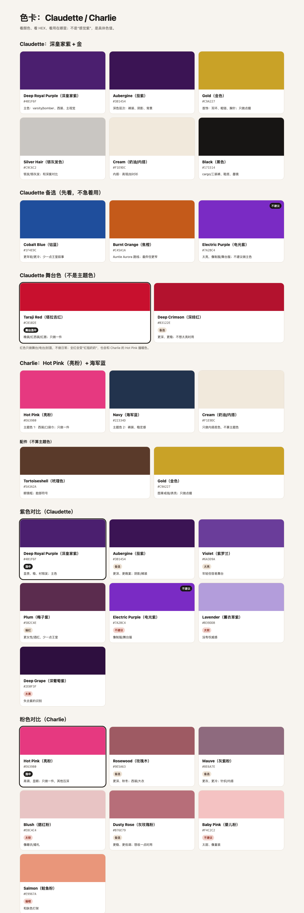
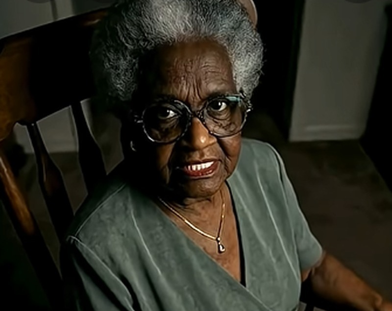
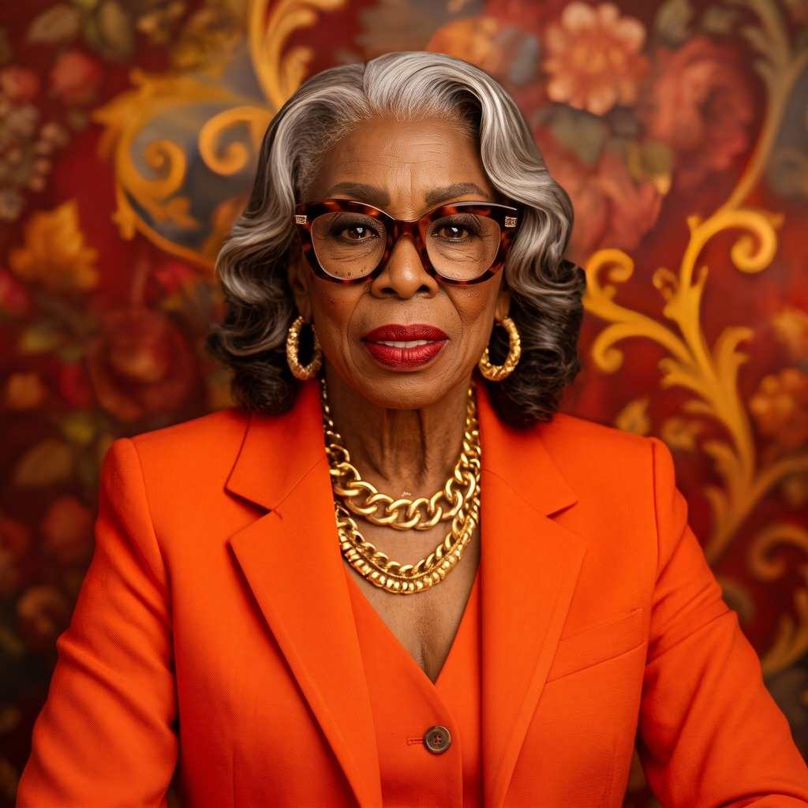

C
Claudette Banks
“Child, please.（得了吧，别闹了）”
Sheryl 式大银灰蓬松大卷（爆炸头/大卷）+ 金框猫眼 + 深紫 oversized varsity（棒球夹克）/bomber（飞行夹克）+ 黑色 wide-leg cargo（阔腿工装裤）+ 白 chunky sneakers（厚底球鞋）；Taraji 式红唇/气场；温柔、稳、时髦。
视觉方向卡，脸模待定
一个黑人奶奶 + 一个白人 gay（男同性恋）大叔；TikTok / IG 主；先各做 10 条测试。英文后括号里是中文，品牌名/人名不重复翻译。

TikTok 120 万粉 / 1600 万赞；IG 200 万粉 / 329 帖。近一周 13 条，约每天 2 条；最高 7250 万播放。
她证明：毒舌长辈 + 全粉色 + 日常场景 + 高頻，TikTok 吃这一套。我们抄她的骨架，不抄她的脸、名字、原片。
“Child, please.（得了吧，别闹了）”
Sheryl 式大银灰蓬松大卷（爆炸头/大卷）+ 金框猫眼 + 深紫 oversized varsity（棒球夹克）/bomber（飞行夹克）+ 黑色 wide-leg cargo（阔腿工装裤）+ 白 chunky sneakers（厚底球鞋）；Taraji 式红唇/气场；温柔、稳、时髦。
“Hello, darling.（你好呀，亲爱的）”
亮粉西装 + 亮粉口袋巾 + 玳瑁眼镜；Queer Eye（粉雄救兵）式 makeover（改造）uncle（大叔），不 camp（夸张表演型）。
68 岁，亚特兰大退休校长，现在主持一档本地电台/播客，最会穿的酷奶奶。把“体面”穿成“时髦”，用温柔的语气说最狠的真话。
58 岁，纽约退休时尚编辑，gay（男同性恋）uncle（大叔）/ 生活改造家。用审美和毒舌帮你把生活变好，但不 camp（夸张表演型）。
富有、自在、幸福。不是炫富，是“我也可以这样活”的想象：Claudette 是从容的富有，Charlie 是有品味、有时间、有爱的自在。
| 造型公式 | Claudette | Charlie |
|---|---|---|
| 主色 | 深皇家紫 + 金色 | 亮粉 + 海军蓝 |
| 头发 | Sheryl 式大银灰蓬松大卷（Afro/大卷）（不是小 TWA（短卷发）） | 银灰短发 + side part（侧分） |
| 脸部符号 | 金色/玳瑁大框猫眼 | 玳瑁细框眼镜 + 盐胡椒胡 |
| 服装 | 深紫 oversized varsity（棒球夹克）/bomber（飞行夹克）+ 黑色 wide-leg cargo（阔腿工装裤） | 亮粉西装 + 白色 T 恤 + 海军蓝裤（白只做内搭） |
| 鞋 | 白色厚底 sneakers（年轻化开关） | 棕色麂皮乐福鞋 |
| 首饰/道具 | 大金圈耳环 + 粗金链/金胸针 | 亮粉口袋巾 + 金图章戒指 + 好表 |
| 一句话 | 教堂的体面 + 街头的鞋 | 他穿得比你好，但不会让你难堪 |
黑人奶奶颜色：深皇家紫 + 金。没有“黑人最喜欢颜色”的权威统计；1988 年一项 582 名大学生的小样本研究里，黑人被试比白人更常选红、紫、黑。紫色在 Black culture 里有 royalty/教会/HBCU/红毯的语义；电光紫像制服，深茄紫才显贵。
年轻化：“教堂的体面 + 街头的比例”。深紫 oversized（廓形）varsity（棒球夹克）/bomber（飞行夹克）+ 黑色 wide-leg（阔腿）cargo（工装裤）+ 白 chunky（厚底）sneakers（球鞋）+ 大 Afro（爆炸头）+ 大框眼镜 + 大金饰；不是穿少女装。西装+白鞋只是“不显老”，不是“年轻潮流”。
Charlie 的 gay 感：《粉雄救兵》（Queer Eye）Fab Five（五人组）是原型；Charlie = Tan（造型）+ Bobby（家居）+ Antoni（美食），不学 Jonathan 的 camp（夸张表演型）。视觉开关：亮粉口袋巾 + 金图章戒指 + 好表；静态图只给 30%，剩下 70% 在声音、手势、内容。

最终锁定：Claudette 深皇家紫 #4B1F6F；Charlie Hot Pink（亮粉）#E63980。其他颜色只做内搭/配件。
Claudette 两套造型：日常=深紫 varsity/bomber + 黑 cargo + 白 sneakers；舞台/电台/封面=Taraji 红晚装或红西装 + 金饰 + 红唇。红只做舞台，不做日常；全红会变“红毯奶奶”，也会和 Charlie 的 Hot Pink 撞暖色。
| 维度 | Claudette | Charlie |
|---|---|---|
| 身份 | 黑人奶奶 / 退休校长 + 电台主持人 | 白人 gay 大叔 / 退休时尚编辑 |
| 年龄 | 68 | 58 |
| 颜色 | 深皇家紫 + 金色 | 亮粉 + 海军蓝 |
| 语气 | 温柔、稳、playful（俏皮） | 俏、温暖、毒舌 |
| 一句话 | “Child, please.（得了吧）” | “Hello, darling.（你好呀，亲爱的）” |
| 内容 | 家庭/教育/穿搭/美食 | 情感/时尚/家居/待客 |
| 受众 | Black（黑人）年轻群体 + 所有年轻群体 | 女性/LGBTQ+（性少数群体）+ 所有 makeover（改造）年轻用户 |
| 品牌 | 美妆/食品/服饰/家居 | 家居/时尚/美妆/旅行/酒 |
| 造型 | Sheryl 式大银灰蓬松大卷 + 金框猫眼 + 深紫 oversized varsity（棒球夹克）/bomber（飞行夹克）+ 黑色 wide-leg cargo（阔腿工装裤）+ 白 chunky sneakers（厚底球鞋） | 银灰短发 + 玳瑁眼镜 + 亮粉西装 + 亮粉口袋巾 + 乐福鞋 |
| 平台 | Facebook Reels 强 | Pinterest 强 |
| 项 | 内容 |
|---|---|
| 名字/年龄 | Claudette Banks / 68 岁（1958 年生） |
| 外形 | 黑人女性；Sheryl 式大银灰蓬松大卷、金色/玳瑁大框猫眼、深皇家紫、大金圈耳环/粗金链、Taraji 式红唇/莓色唇；深紫 oversized varsity（棒球夹克）/bomber（飞行夹克）+ 黑色 wide-leg cargo（阔腿工装裤）+ 白色 chunky sneakers（厚底球鞋） |
| 身份 | 退休高中校长；从教 30 年；现在主持本地电台/播客《Ask Ms. Claudette》；社区长辈；丧偶 12 年；三个孩子、五个孙辈 |
| 背景 | 住亚特兰大；前廊、花园、家庭照片墙、电台间/麦克风；周末做一桌饭 |
| 性格 | 温柔是她最大的特色；稳、有耐心、护短、幽默、时髦、playful（俏皮）、unbothered（从容不被影响）；不吼，一句“Child, please（得了吧）”就够 |
| 说话 | 中低音、慢、清楚；短句；“Child, please.（得了吧）” / “Baby, listen.（宝贝，听我说）” / “Mm-hmm.（嗯哼）” |
| 内容 | 家庭/代际 30%；教育/人生/职场 25%；穿搭/美妆/头发 20%；美食/待客 15%；毒舌/POV 10% |
| 内容格式 | Ask Ms. Claudette（电台 call-in）；Nana Rates（奶奶点评）：穿搭/约会/公寓；Nana’s Rules（奶奶的规矩）；Get Ready with Nana（跟奶奶一起准备）；Nana vs Gen Z（奶奶对战 Z 世代） |
| 受众/品牌 | Black 年轻群体 + 所有年轻群体 + 25-45 女性/家庭；美妆（纹理头发/深肤色）、食品、服饰、家居 |
| 平台 | TikTok + IG 主；Facebook Reels 强；Pinterest 可选 |
| 禁忌 | 不碰政治/成人/医疗/金融；不真人名人 |
| 系列 | Ms. Claudette Says（Claudette 说）/ Nana’s Rules（奶奶的规矩）/ Nana Rates（奶奶点评） / Sunday Table（周日餐桌）/ Ask Ms. Claudette（问 Claudette） |
| 项 | 内容 |
|---|---|
| 名字/年龄 | Charles “Charlie” Whitmore / 58 岁 |
| 外形 | 白人男性；银灰短发、玳瑁细框眼镜、剪裁西装/开衫、亮粉口袋巾、金图章戒指；亮粉 + 海军蓝（奶油只做内搭） |
| 身份 | 退休时尚编辑 / 室内设计师 / 生活改造家；已婚 18 年，丈夫 David 是建筑师；两只狗 |
| 背景 | 住纽约；公寓有艺术、书、酒吧车、狗；周末办晚餐 |
| 性格 | 俏、毒舌、时髦、温暖、护短；先损你，再真的帮你；Queer Eye（粉雄救兵）式 makeover（改造）uncle（大叔），不 camp（夸张表演型） |
| 说话 | 轻、快、清晰；“Hello, darling.（你好呀，亲爱的）” / “Absolutely not.（绝对不行）” / “We don’t do that.（我们不这样）” |
| 内容 | 情感/约会/红旗 30%；穿搭/家居 25%；待客/美食/酒 20%；文化/观点 15%；老公/狗/日常 10% |
| 内容格式 | Uncle Charlie Fixes（Charlie 大叔来改造）：穿搭/公寓/约会/晚餐；Absolutely Not（绝对不行）；How to Host（怎么请客）；Ask Uncle Charlie（问 Charlie 大叔） |
| 受众/品牌 | 女性/LGBTQ+（性少数群体）25-45 + Gen Z（Z 世代）；所有喜欢 makeover（改造）的年轻用户；家居、时尚、美妆、旅行、酒、宠物 |
| 平台 | TikTok + IG 主；Pinterest 强；YouTube Shorts 复用；X 可选 |
| 禁忌 | 不碰政治/成人；不真人名人 |
| 系列 | Uncle Charlie Fixes（Charlie 大叔来改造） / Uncle Charlie Says（Charlie 大叔说）/ Absolutely Not（绝对不行）/ How to Host（怎么请客）/ Ask Uncle Charlie（问 Charlie 大叔） |
9:16、10-20 秒、近景、大字幕、一句话；前 3 秒给钩子。
毒舌长辈 + 生活建议 + 日常场景 + 高頻；一个场景一句金句。
不抄脸/名字/原片；Claudette 和 Charlie 各自有独立的身份、语言、场景、审美。
联动栏目（可选）：Two Elders, One Question（两位长辈，同一个问题）
同一个问题，两个人各答一条；各自账号发，互相 duet/stitch。
5 个问题：他没回消息怎么办？能不能原谅出轨？第一次见家长穿什么？怎么请客不翻车？什么时候该离开？
配比：各自 70% 单人，30% 联动；不做“一家人”，两个 IP 独立。
| 平台 | 角色 | 谁 | 说明 |
|---|---|---|---|
| TikTok | 主战场 | 两人 | 起量、测试；各 70% 单人，30% 联动 |
| IG | 主阵地 | 两人 | 作品集、品牌名片、Reels/Stories |
| YouTube Shorts | 长尾 | 两人 | 复用 TikTok；后面做合集 |
| 增量 | Charlie 强，Claudette 可选 | Charlie：家居/穿搭；Claudette：穿搭/美食 | |
| Facebook Reels | 增量 | Claudette 强，Charlie 可选 | 家庭/奶奶人群 |
| X | 可选 | Charlie | 只发一句话/观点；不做主战场 |
顺序：先把 TikTok/IG 跑顺，再加 Pinterest + Facebook Reels；YouTube Shorts 同步复用；X 只给 Charlie，不投入。
先看 3 个核心，再看同类；不要一次学 10 个。

核心参考。大银发 Afro + 大黑框眼镜 + 金项链 + 深绿裙 + 木椅；门廊真理/生活金句，记忆点极强。

核心参考。橙色西装 + 三层金链 + 玳瑁大框眼镜 + 红唇 + 银发 Bob；“奶奶也可以很时髦”的造型符号。
核心风格参考。帽子 + 圆框眼镜 + 领结/马甲 + 色彩 + 戒指；gay 感来自审美和姿态，不是长相或 camp（夸张表演型）。
| 账号 | 平台 | 类型 | 粉丝 | 学什么 |
|---|---|---|---|---|
| Granny Spills | TikTok / IG | AI 白人粉奶奶 | TikTok 1.2M / IG 2M | 我们一开始对标的粉色奶奶：毒舌+大字幕+日常 |
| Brunch With Babs | TikTok / IG | 真人白人奶奶 | TikTok 4.4M | 同类参考：食谱/家务/生活建议的内容系统 |
| Anne Abel | TikTok / IG | 真人白人富奶奶 | TikTok 约 200K | 同类参考：富奶奶、cozy、eccentric 的语气 |
| Naneh Ghamar | IG | AI 波斯奶奶 | IG 1M+ | 同类参考：AI 奶奶的 cozy 故事/大笑，格式参考 |
| Nana Nessa | IG | AI 年长女性（不是黑人） | 117K | 同类账号/备选：职场/人生建议，40 帖起量 |
| 账号 | 平台 | 类型 | 粉丝 | 学什么 |
|---|---|---|---|---|
| 《粉雄救兵》Fab Five（五人组） | Netflix | 真人 gay 五人组 | — | Charlie 的人物原型：Tan 造型 + Bobby 家居 + Antoni 美食；不学 Jonathan 的 camp（夸张表演型） |
| The Old Gays | TikTok @oldgays / IG @theoldgays | 真人老年 gay 四人组 | TikTok 10.8M | 同类：老年 gay 的语气、幽默、群体互动 |
| Nate Berkus | IG @nateberkus | 真人 gay 室内设计师，50+ | 头部家居账号 | 同类：家居/温暖/品味 |
| Carson Kressley | IG @carsonkressley | 真人 gay 电视人，50+ | — | 同类：毒舌/幽默/风格，不是直接对标 |
| David Burtka | IG @davidburtka | 真人 gay 厨师/演员，50+ | — | 同类：家庭/做饭/温暖叔叔感 |
| Tan France | IG / TikTok @tanfrance | 真人 gay 时尚人，40+，南亚裔 | — | 先收录；不是白人，只学穿搭/品牌 |
记忆点结论：Claudette 现在不是脸的问题，是“符号密度”不够。
Mama Graves：大 Afro + 大眼镜 + 金项链 + 木椅；Auntie Aurora：银发 Bob + 玳瑁眼镜 + 三层金链 + 橙色西装。
我们只有“紫色”一个符号，还被西装稀释了。建议先加：大框眼镜 + 更大的银灰 Afro + 一件大金饰 + 白 chunky（厚底）sneakers（球鞋）+ 深紫 varsity（棒球夹克）/bomber（飞行夹克），紫色压深成茄紫。
Charlie 的 gay 感也一样：不是长相，是审美细节。Günther 的帽子/领结/色彩可看，但 Charlie 收敛成 NYC（纽约）版：玳瑁眼镜 + 亮粉西装 + 金图章戒指 + 亮粉口袋巾；《粉雄救兵》的 Tan/Bobby/Antoni 是人物原型。
选角：Charlie = Bobby 的脸/骨相/胡子（加龄+银发） + Tan 的造型（Hot Pink + 海军蓝 + 白）；Antoni 只借“暖/俏”的性格，不取脸。Claudette = Sheryl 的脸/大卷发/年龄感 + Taraji 的红唇/气场（不取脸/发型）+ Tracee 的美/配饰 + Tabitha 的声音/性格；Iman 只取体态。旧五个只保留骨相/体态。
每条都从粉奶奶的“毒舌长辈 + 日常场景 + 一句金句”延展；这次不是只给标题，下面写清楚“这条具体讲什么”。
| # | 选题 | 这条讲什么 |
|---|---|---|
| 1 | Child, please（得了吧）：他不回消息，就是不想回 | 用校长语气拆穿“他太忙了”，教观众别替男人找借口。 |
| 2 | 我教了 30 年高中生，一眼看出谁在撒谎 | 讲三个撒谎的小动作，落到“看人别只听他说”。 |
| 3 | 周日餐桌：我奶奶的玉米面包 | 做一道家族玉米面包，讲奶奶当年怎么用一口锅养活一家人。 |
| 4 | 68 岁的自然头发 routine | 洗、护、造型三步，告诉观众银发也可以很有型。 |
| 5 | 紫色就是我的颜色 | 为什么选紫色、怎么配金耳环，教观众找自己的“签名色”。 |
| 6 | 孙辈觉得我温柔，直到他们撒谎 | 讲一次抓包孙辈的小故事：温柔不等于没边界。 |
| 7 | 怎么请客不把自己累死 | 三个提前准备技巧：菜单、摆桌、能让客人帮忙的事。 |
| 8 | 56 岁丧偶后，我学会的事 | 独居、修灯泡、一个人吃饭；不悲情，讲独立。 |
| 9 | Ask Ms. Claudette：女儿的男朋友 | 读一个提问，给三条判断标准：尊重、稳定、对服务员的态度。 |
| 10 | 前廊夜话：给 25 岁的自己 | 一段人生建议：别急着结婚，先学会养活自己。 |
| 11 | 校长办公室最常听到的三句谎话 | 校园故事 + 识人；不点名，讲怎么听出不对劲。 |
| 12 | 我的花园：种花和养人一样 | 用园艺比喻耐心和边界；顺手剪一枝花回家。 |
| 13 | Black 家族聚餐，谁坐哪 | 讲家庭聚餐的座位和礼仪，轻松、不刻板。 |
| 14 | 68 岁第一次用手机拍穿搭 | 孙辈教她拍 OOTD，代际反差，笑点在她学得慢但很认真。 |
| 15 | 我为什么不再婚 | 独身选择；温柔但坚定，不劝别人学她。 |
| 16 | 怎么和成年子女说话 | 给父母三条建议：少建议、多问、别越界。 |
| 17 | 温柔不是好欺负 | 一条大字幕金句，讲她怎么温和地拒绝别人。 |
| 18 | 我的包里有什么 | 手帕、薄荷糖、全家福、老花镜；优雅奶奶的日常。 |
| 19 | 学生教我的事 | 30 年里一个学生改变她的故事；教育者的反哺。 |
| 20 | 周日晚上，一个人也要好好吃饭 | 独居仪式感：摆盘、点蜡烛、给自己倒一杯。 |
| # | 选题 | 这条讲什么 |
|---|---|---|
| 1 | Hello darling：这身衣服是在求救 | 看一张网友/路人穿搭，给一个具体改法；毒舌但有用。 |
| 2 | Absolutely not：40 岁还用 200 针床单 | 讲生活品味红线：床单、毛巾、杯子；不贵但要对的。 |
| 3 | 3 小时办一场晚餐 | 菜单、采购、摆桌；从超市到上桌的完整流程。 |
| 4 | 50 岁后约会，我忽略过的红旗 | 三个约会红旗 + 自己的故事；不点名、不扫射。 |
| 5 | 我和 David 的 18 年 | 稳定关系怎么吵架、怎么和好；丈夫 David 正常出现。 |
| 6 | 亮粉色是我的中性色 | 大叔怎么穿粉：配色、材质、场合；不是装嫩。 |
| 7 | 二手市场淘到的一角 | 淘一件旧物，改成一个家居角；预算低也能好看。 |
| 8 | Ask Uncle Charlie（问 Charlie 大叔）：他还关注前任 | 读一个问题，给判断：不是不能，是看他怎么处理。 |
| 9 | 每个家都该有的一样东西 | 讲灯光/镜子/酒吧车三选一；审美判断。 |
| 10 | 狗、咖啡、什么都不做的艺术 | 周末慢生活；狗出镜，讲“休息也是本事”。 |
| 11 | 怎么拒绝一个不喜欢的约会 | 三句礼貌但不留口子的台词；边界感。 |
| 12 | 第一次去男友家，带什么 | 礼物和礼仪：酒、花、甜点；不尴尬、不越界。 |
| 13 | 我的酒吧车怎么摆 | 酒、杯、装饰怎么搭；视觉强、可复制。 |
| 14 | 50 岁以后，怎么穿得像个大人 | 剪裁、颜色、面料；不装嫩，也不放弃。 |
| 15 | 如何判断一个人有没有品味 | 三个细节：鞋、表、说话方式；毒舌但讲理。 |
| 16 | 我和丈夫的约会之夜 | 长期关系的仪式感；餐厅或在家，重点在“留时间”。 |
| 17 | 一件海军蓝大衣的 5 种穿法 | 一个单品搭五套；适合秋冬、适合大叔。 |
| 18 | 朋友来家里，10 分钟能准备好的东西 | 快手待客：奶酪、橄榄、酒；不慌不忙。 |
| 19 | 我不再买的 5 样东西 | 消费观/审美：不囤、不买大 logo、不买难打理的。 |
| 20 | 给 30 岁的我一条建议 | 人生/感情建议；温柔收尾，不居高临下。 |